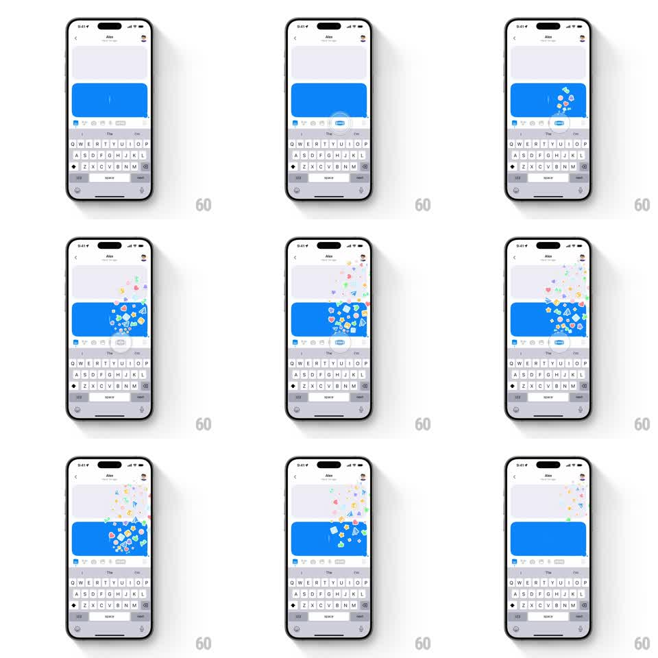

Media
Frame-by-frame

Rebuild this interaction 1:1: Honk's sticker chaos - rapid-tapping the sticker button in the suggestion strip erupts colorful stickers that scatter with physics over the live bubble, tumble, and rain down.

Rebuild this interaction 1:1: Honk's sticker chaos - rapid-tapping the sticker button in the suggestion strip erupts colorful stickers that scatter with physics over the live bubble, tumble, and rain down. ## Integration Integration: stack-agnostic spec - springs given as stiffness/damping, timed motions as duration + curve; map every value to your framework and animation library of choice. ## Scene Honk chat with Alex: blue live bubble with a blinking cursor, text keyboard open, and the suggestion strip above it carrying the sticker button. Rapid taps on the sticker button launch bursts of small multicolor stickers that arc up over the bubble, spread across the chat, then tumble down and fade. ## Motion spec Pattern: rapid-tap sticker eruption with physics scatter. - Each tap on the sticker button: 4-6 stickers burst from the button (scale 0 -> 1, 40ms stagger), launching up-right with randomized velocity (vx 50 to 350pt/s, vy -500 to -900pt/s). - Stickers are physics bodies: they spin (+-540deg per flight), drift under gravity (~1600pt/s2), bounce lightly off screen edges (restitution ~0.3), and land or fade (last 400ms of a 1.2-1.8s lifetime). - Sticker set is a mixed bag - hearts, stars, blobs, badges in varied colors; each spawn picks randomly. - Rapid tapping stacks bursts into a fountain over the bubble; taps also nudge the button (scale 1 -> 0.9 -> 1, 120ms) for tactile feedback. - The bubble's text and cursor never move - stickers are a pure overlay. ## Calibration - The fountain originates exactly at the sticker button, not the bubble - the arc reads as erupting from the toolbar. - Keep sticker size small (14-30pt) so hundreds can fly without hiding the chat completely. ## Reduced motion One sticker pops from the button per tap and fades (300ms). ## Don't miss - Mix the sticker styles per burst - a uniform stream reads as one sticker copied, not a delightful chaos. - Physics must keep running while the user keeps typing; the keyboard stays live.